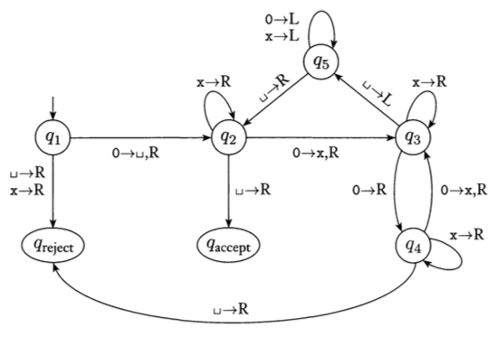

Due Dates: Oral presentations of material begin on 1 November.
Written descriptions of material presented due one week after presentation.
Topics: Turing Machines (Chapter 3).
An integral part of this class is understanding and presenting the problems
assigned as homework. Everyone is expected to do all the problems,
but we will take turns on who presents the problem solutions to the class
(every 2-3 weeks, depending on the number of students in the class). Within
a week of presenting a problem solution to the class, you must submit a written
description of it, via the Blackboard system. The written solutions
will be posted on the Blackboard website for the class, so, they can used
by everyone to study for the exams. Since it's hard to write
down answers that are concise and are easily readable by all, if you wish
to improve a grade on any problem, you may resubmit it for grading.
Undergraduate Problems
All students enrolled should complete the following:
- Given a state diagram for the Turing Machine in Figure 3.8:

write the configurations of the machine at every state for input
0000.
- Given a state diagram for the Turing Machine in Figure 3.8:
write the configurations of the machine at every state for input
010.
- Give a state diagram for a Turing Machine that flips every digit
in the input (i.e. 0's become 1's and 1's become 0's). For example, if the input is 001101, the ending tape would have: 110010.
- Give a state diagram for a Turing Machine that ends with two copies of the input on the tape. For example, if the input is 1001, the ending tape would have: 1001 1001.
Hint: Use an extra symbol to keep track of where you are in the string being copied.
- Give an informal description of a Turing Machine that takes a binary number and ends with double that number on the tape. For example, if the input is 101 (or the decimal number 5), the output would be
1010 (or the decimal number 10).
Graduate Problems
Students enrolled for graduate credit, should complete all the undergraduate problems, as well as:
- Give a state diagram for a Turing Machine that ends with two copies of the input on the tape: one forward and one reversed. For example, if the input is 11001, the ending tape would have: 11001 10011.
Hint: Use an extra symbol to keep track of where you are in the string being copied.
- Give an informal description of a Turing Machine that takes two binary numbers and ends with the sum of the numbers on the tape. For example, if the input is 101 111 (or the decimal numbers 5 and 7), the output would be 1100 (or the decimal number 10).